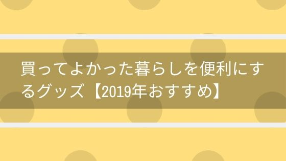

買ってよかった暮らしを便利にするグッズ【2019年おすすめ】
暮らしを便利にするグッズを紹介いたします。
あなたの暮らしにお役に立てるグッズが見つかりますように。
暮らしを便利にするグッズ
2019年
RAVPower モバイルバッテリー充電器
モバイルバッテリーの充電面倒ではありませんか？
モバイルバッテリーと充電器が一体型になっている製品が出ていたんです。
バッテリー容量も6700mAhと十分な性能。
いつでもどこでもスマホを充電しながらモバイルバッテリーもそのまま充電できるのはありがたいですね。
大きさもコンパクトなため、かさばらず嬉しいです。
むしろどうして今まで充電器とモバイルバッテリーを別々で持ち歩いていたんだった感じになりました。
マキタ 充電式クリーナー
掃除の時、コード邪魔だな～。
コードレスの掃除機は興味あるけど吸引力とかどうなの？
掃除機選びって難しく、結構失敗しますよね。
このマキタの充電式クリーナーはコードレスかつ吸引力が他の掃除機に比べて高いのが特徴です。
充電がものすごく速いこの掃除機。
スリムな形のため部屋の隅に置いておけばこまめに使えて便利です。
コードレスなので車の掃除にも使えてほこりのない車内を維持可能なのは嬉しいですよね。
百貨店で導入している掃除業者も使っている掃除機のため吸引力はお墨付きです。
蚊がいなくなるスプレー
寝ている時に耳元で鳴り響く蚊の羽音。
想像するだけでストレスがたまりそうですよね。
そんな蚊の羽音に悩まされている人におすすめなのがこのスプレー。
たったワンプッシュで蚊がいなくなるんです。
え？っと思うかもしれませんが、ダメ元で買ってみた人から「どうなってるのこれ？」と言われる性能。
ノーマットタイプはスイッチの切り忘れに注意が必要なのが欠点ですがこれはプッシュするだけなので簡単ですね。
南部鉄器 フライパン
このフライパンはとても重いです。手入れもしにくく大変です。
持ち手が熱くなってしまうので注意も必要です。
え？じゃあなんでこのフライパンをおすすめしているのか気になりますよね。
それは料理がおいしくなる。この１つの大きなメリットがあるからです。
といっても正直なところホントに美味しくなるのか疑ってしまいますよね。
私なら絶対信じないですしね。
実際使ってもらわないとよさが実感できないのがもどかしい、そんなフライパンです。
参考になるかはわからないですが、Amazonのレビューも見てください。
Amazonレビューの豆知識
レビューした人の名前をクリックすると他のレビューも見ることができます。
業者やサクラを見極めるのに使ってください。
イワタニ 炉ばた 焼器
七輪のような炙り焼き・炉ばた焼きが楽しみたい。
串焼き、網焼き美味しく焼きたい。
分かります。焼き鳥に牛タン、ほっけにホタテなど焼いているのを想像しただけでお腹がすいてきますよね。
このイワタニの炉ばた焼器なら遠赤外線による調理なので、食材の水分を飛ばすことなくふっくらした焼き上がりとなります。
そのためホットプレートでは味わえない、炭で焼いたような味わいとなるのです。
屋内、屋外ともに使えますが煙がでるため換気を十分にしてくださいね。
DORIS コーナーデスク
作業スペースを作ろうと考えている人におすすめしたいです。
作業用の机としてよく使われるのがこのコーナーデスク（L字デスク）。
机にケーブルを通す穴が開いており、部屋の角に設置して使えるのがうれしいところです。
とってもシンプルでコスパがよいのがこのコーナーデスクのよいところなので気になった方は見てみてください。
アイリスプラザ リクライニング座椅子
リビングでくつろぎたい時にはこの座椅子がとってもおすすめです。
ふかふかでバックが長く高身長の方でも頭までカバーしてくれます。
リビングで映画やテレビを見たり、ゆったり本を読んだり、そんな生活のひと時がちょっと幸せになります。
足元の角度が調整できる機能があり長時間座っていても疲れないのもありがたいですよ。
安い座椅子は買わないほうがよい。
私が3000円くらいの座椅子を何度か買って失敗した経験です。
・角度調節部分が壊れるのが早い。
・クッションがすぐにへたってふわふわ感がなくなる。
・内部の金属がカバーを突き破って飛び出す。
・座っているとお尻が痛い。
・思っていたより小さい。
・金属部分が体に当たって痛い。
シャープ 加湿空気清浄機
寒くなってくると乾燥が気になりますよね。
乾燥すると空気中にウイルスやほこりが舞い続けるので風邪をひきやすくなったり、体に悪影響を及ぼしたりします。
そこで加湿器で部屋中の乾燥を防ぎ、空気清浄の機能でほこりを吸い取るこの加湿空気清浄機が使えるというわけです。
何故か部屋にいるときだけ鼻が詰まる。水を飲んでも喉がカサカサする。これは部屋が乾燥している合図です。
鼻づまりや喉のカサカサ感そういったものを取り除いてくれるだけで普段の生活が過ごしやすくなります。
部屋での生活を快適で安全に過ごす。そういう生活をお望みの方は是非使ってみてください。
LightYou セラミック包丁
・よく切れる包丁が欲しい。
・包丁持っていると手が疲れる。
・包丁の汚れが目立って気になる。
そんなお悩みを解決するのがこの包丁です。
普段どのような包丁を使われていますか？
ステンレス製の包丁をまだ使われたことがないのであれば試してみる価値が高いです。
切れ味が鋭くよく切れるのは包丁として当たり前の機能です。
この包丁の一番いいところは「軽さ」にあります。
手が全然疲れないとの評判が一番多いです。
ステンレスの包丁と比べセラミックは錆びないのがいいですよね。
そのため錆による汚れはつかないのはもちろんのこと、色が黒であることで汚れが全く目立たず気になりません。
ブラウン 電動歯ブラシ
歯磨きの時間って結構かかりますよね。
糸ようじや歯間ブラシを使うのであればなおさら時間がかかります。
電動歯ブラシは短時間でごっそり汚れが取れるので時短もできて汚れもしっかりとれるのでおすすめです。
電動歯ブラシまだ使ったことがないって方、電動歯ブラシを使ったことがあるけど全然汚れを取れなかったという方。
使った初日から効果が実感できますよ。
安い電動歯ブラシは全然汚れが取れないので、迷っている方がいれば少し高めのものを買うほうが良いです。
シロカ 全自動ホームベーカリー
お家で焼き立てのパンが食べたい。
そんな願いをかなえてくれるのがこのホームベーカリー。
使っている人の意見では以外に面倒ではなくよく使う。内釜はほとんど洗う必要がなく手間が少ないとのこと。
使ってない人の意見では使ってみたいとは思うけど自分で買う気にならない。
使っている人の意見は好評だけど買う気にならないということはプレゼントにおすすめできるかもしれないですね。
ミニ三脚 ゴリラポッド
旅先で記念写真を残したい。でも、人に頼むのは恥ずかしい。そもそも人がいない。
そんな時に役に立つのがこのゴリラポッドという脚立です。
アームが固定できればどこでも記念写真が残せるので旅行で写真を撮りたい方に特におすすめですよ。
磁石が付いているタイプの場合金属の柱にも固定できて使い勝手がさらによいのでこちらも見てみてください。
まとめ

いかがだったでしょうか？
あなたの生活や暮らしが少しでも豊かで幸せになることを願っています。
関連記事